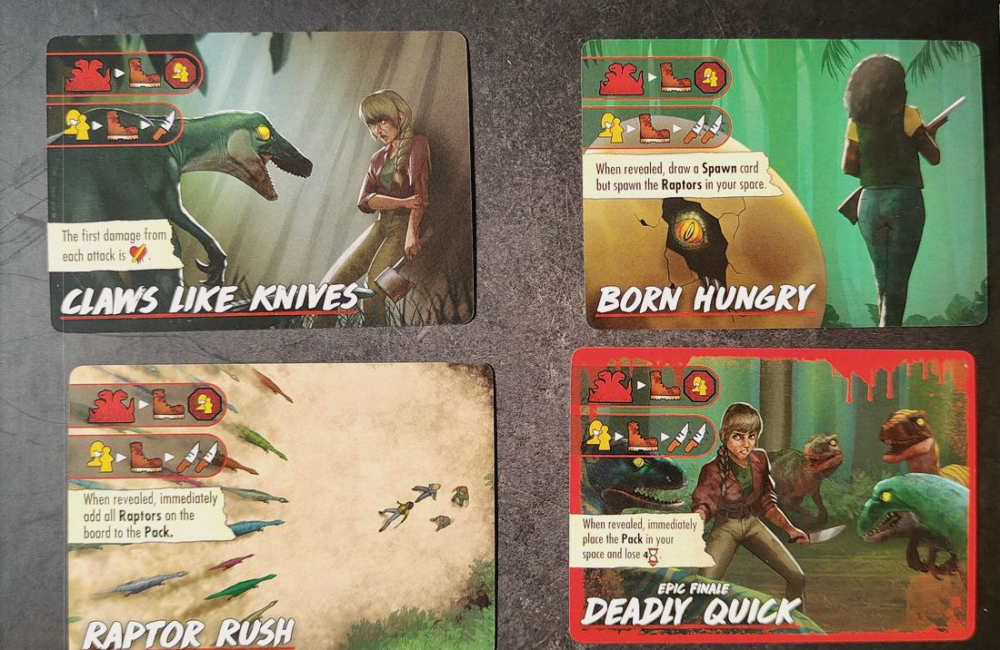
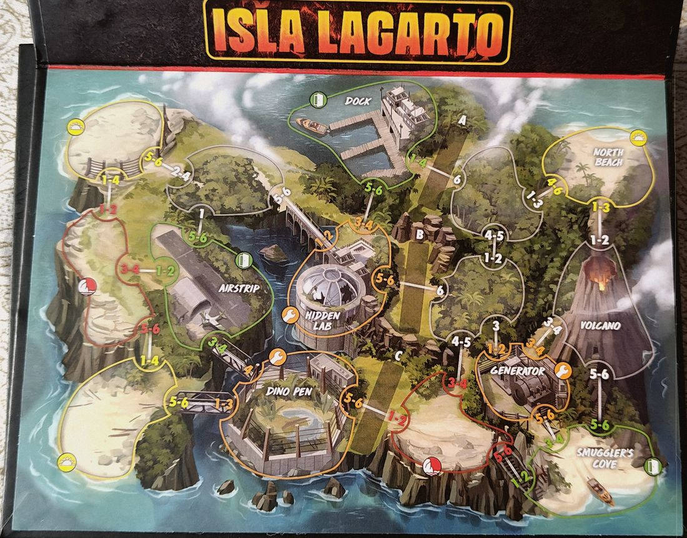

Box · S4·F5 · 57 Partien
The Raptor Games57,9 % Siegquote
🇪🇸 ES · 🇬🇧 EN · 🇫🇷 FR · 🇩🇪 DE · 🇮🇹 IT
📖 Guide zu Raptors (Killer) · Guide zu Isla Lagarto (Ort)
Raptors auf Isla Lagarto. In 57 erfassten Partien wird in 57,9 % der Fälle gewonnen, 7,4 Punkte unter dem Spielschnitt (65,3 %).
Kleine Stichprobe
Nur 57 erfasste Partien. Aufgeteilt auf Dark Powers, Finales und Setups bleiben je Auswertung sehr wenige: eher ein Hinweis als ein Fakt.
Was sie besonders macht
Die Lebenspunkte des Rudels entsprechen der Anzahl der Raptoren, ohne Obergrenze. Freie Raptoren bleiben bei Opfern stehen, statt sie anzugreifen. Der T-Rex kann nicht getötet werden, bewegt sich 2 pro Runde und frisst in fester Reihenfolge: Opfer, Raptoren, Final Girl, Killer. Drei Elektrozäune blockieren Bewegung und Sichtlinie; ein Würfelwurf im Upkeep entscheidet, welche aktiv sind. Retten kostet 1 zusätzliche Zeit. Vorläufige Daten: Die Box ist sehr neu, und es gibt wenig Erfahrung damit.
| Schwierigkeit | Fortgeschritten |
| Die Karte | Elektrozäune, Vulkanausbruch |
Der Killer
Raptors hat über alle Karten eine Siegquote von 65,6 %, bei 90 Partien. Hier, auf Isla Lagarto, sind es 57,9 %.
Dark Powers
| Dark Power | Siegquote | Partien |
|---|---|---|
| Pack Conditioning | 50,0 % | 22 |
| Blood Thirsty | 66,7 % | 21 |
| They're Everywhere! | 78,3 % | 23 |
Wo man sie bekommt
Affiliate-Links: Wenn du kaufst, bekomme ich eine kleine Provision, für dich ohne Mehrkosten. An den Daten oben ändert das nichts.
Wie man die Partie beginnt
Die vier Eröffnungen, und welche je nach Aufbau passt, stehen in den Eröffnungsstrategien.
📖 Guide zu Raptors (Killer)
Passt zu jedem Ort. ↑ nach oben
⌛ = Zeit · ✴ = Schaden · 🩸 = Bloodlust · 💔 = Gesundheit verlieren · ❤️ = Gesundheit zurückgewinnen · 🔧 = Feld mit dem orangen Schraubenschlüssel-Symbol

Achtung
- Das Pack gilt in jeder Hinsicht als Killer; einzelne Raptoren sind Handlanger. Eine Karte mit "Raptor(s)" schließt das Pack nicht ein; eine mit "Pack" schließt einzelne Raptoren nicht ein.
- Du gewinnst, wenn das Pack ausgeschaltet ist, auch wenn noch einzelne Raptoren auf dem Spielplan sind.
- Ein Raptor, der während der Killerphase erscheint, wird erst in der nächsten Killerphase aktiv.
- Einzelne Raptoren halten an, wenn sie ein Feld mit dir oder einem Opfer betreten (oder darin ihre Bewegung beginnen). Ort-Terrorkarten zeigen dieses Symbol nicht, die Regel gilt trotzdem.
Spezieller Aufbau
- Mische die Spawn-Karten und lege sie verdeckt neben die Raptors-Karte; stelle die Raptor-Meeples auf diese Karte.
- Das Pack beginnt auf dem Killerfeld (K) der Aufbaukarte, statt des Killer-Meeples aus dem Grundspiel.
Das Pack
- Eine große Gruppe Raptoren, die in jeder Hinsicht als Killer gilt.
- Seine Gesundheit ist die Anzahl der Raptoren darin: Sie beginnt bei 5 (1 Final Health und 4 Gesundheit) und hat keine Obergrenze.
- Der Angriffswert auf dem Killertableau ist der Schaden, den das Pack pro Angriff verursacht, egal wie groß es ist.
Einzelne Raptoren
- Die Raptor-Meeples. Sie sind in jeder Hinsicht Handlanger.
- Sie haben 1 Gesundheit und nutzen den Bewegungswert auf dem Killertableau.
- Sie greifen selten an, aber wenn, verursacht jeder 1 ✴.
Dem Pack anschließen
- Beim Pack-Symbol ziehen Raptoren auf dem kürzesten Weg zum Pack. Sind mehrere gleich lang, nehmen sie den, der sie vor dem Anhalten am nächsten ans Pack bringt.
- Ein Raptor im Feld des Packs schließt sich ihm sofort an: Entferne den Meeple und gib dem Pack für jeden 1 Gesundheit.
- Vom Spielplan entfernte Meeples kommen zurück auf die Raptors-Karte für künftige Spawns.
Raptoren erscheinen lassen
- Beim Spawn-Symbol ziehe eine Spawn-Karte und lass so viele Raptoren erscheinen. Das Feld bestimmt ein Würfelwurf auf der Tabelle der Raptors-Karte; sind mehrere zulässig, wählst du.
- Sie erscheinen nie in Feldern, die nicht mehr zugänglich sind.
- Reichen die Meeples nicht, schließt sich der dem Pack nächste Raptor ihm an und du nutzt seinen Meeple; wiederhole das, bis die Karte abgehandelt ist.
- Ist der Spawn-Stapel leer, mische die Ablage und ziehe.
- Der letzte Effekt auf der 🩸-Leiste lässt ebenfalls einen Raptor erscheinen, wie eine Spawn-Karte mit 1.
Die Spawn-Tabelle (Raptors-Karte)
- Wirf einen Würfel, um zu sehen, wo sie erscheinen: 1 dein Feld · 2 das grüne (Ausgangs-)Feld, das dem Pack am nächsten ist · 3 das 🔧-Feld, das dem Pack am nächsten ist · 4 das grüne Feld, das am weitesten vom Pack entfernt ist · 5 das 🔧-Feld, das am weitesten vom Pack entfernt ist · 6 das Feld, das am weitesten von dir entfernt ist.
- Jeder freie Raptor: 1 ❤️, ein Angriff mit 1 ✴ und Bewegung wie das Pack. Sie bewegen sich nicht, wenn sie bei dir oder einem Opfer beginnen, und halten an, wenn sie ein Feld mit dir oder einem Opfer betreten.
Ihre Karten lesen
- Die rote Silhouette mehrerer Raptoren = das Pack-Symbol: Freie Raptoren ziehen zu ihm, um sich anzuschließen. Die gelben Figuren = Ziel bist du oder das nächste Opfer. Der Stiefel = Bewegung. Das Messer = Angriff (einmal pro Messer). Das Stoppschild mit Figuren = hält an, wenn es dich oder ein Opfer erreicht. Das zerbrochene Ei = Raptoren erscheinen.
- "Pack only" betrifft nur das Pack; "Raptors only" nur die freien Raptoren.
Finales
- Alle haben zwei Zeilen: Oben ziehen freie Raptoren zum Pack und halten an, wenn sie dich oder ein Opfer erreichen; unten nimmt das Pack dich oder das nächste Opfer ins Ziel, bewegt sich und greift an.
- Claws Like Knives: Das Pack greift einmal an. Der erste Schaden jedes Angriffs ist 💔: du verlierst direkt Gesundheit.
- Born Hungry: Das Pack greift zweimal an. Beim Aufdecken ziehe eine Spawn-Karte, aber lass die Raptoren in deinem Feld erscheinen.
- Raptor Rush: Das Pack greift 3-mal an. Beim Aufdecken schließen sich alle Raptoren auf dem Spielplan dem Pack an.
- Deadly Quick (episches Finale): Das Pack greift zweimal an. Beim Aufdecken stelle das Pack in dein Feld und verliere 4 ⌛.
Dark Powers
- Pack Conditioning: Immer wenn ein Raptor an das Pack angrenzt, füge ihn dem Pack hinzu.
- They're Everywhere!: Ziehst du Spawn-Karten, ziehe 2 und nimm den höheren Wert. Dann wirf beide ab.
- Blood Thirsty: Jedes Mal, wenn das Pack ein Opfer tötet, erhält es ❤️.
- Scaly Hide (epische Dark Power): Das Pack und die Raptoren ignorieren jeden Schaden durch Reaktionskarten.
Terrorkarten, die Erklärung brauchen
- Protect the Brood (2 Exemplare): Raptoren erscheinen (Ei) und du stellst das Pack dorthin, wo sie erschienen sind. War die Spawn-Karte eine 0, wirf einen Würfel und platziere das Pack nach der Tabelle der Raptors-Karte. Dann nimmt das Pack dich oder ein Opfer ins Ziel, bewegt sich und greift an.
- Share the Feast: Das Pack wählt sein Ziel, bewegt sich und greift an; freie Raptoren ziehen zum Pack (und halten bei dir oder einem Opfer an). Hat sich einer dem Pack angeschlossen, greift das Pack erneut an.
- No Escape: Sind keine Raptoren auf dem Spielplan, wirf sie ab und ziehe die nächste Terrorkarte. Sonst wird der jeweils nächste Raptor auf jedes grüne (Ausgangs-)Feld gestellt, und die auf Ausgängen greifen an. Wurde niemand angegriffen: 🎭🎭.
- Predatory Instincts (kleine Dark Power): Das Pack verursacht 1 zusätzlichen ✴ pro Messer.
- Survival Instincts (kleine Dark Power): In jedem Unterhalt erhält das Pack ❤️.
📖 Guide zu Isla Lagarto (Ort)
Passt zu jedem Killer. ↑ nach oben

Achtung
- Lava-Felder sind für niemanden mehr zugänglich, auch nicht für Raptoren und den T-Rex.
- Wird Game Makers beim Aufbau gezogen, wirf es ab und ziehe ein anderes.
Spezieller Aufbau
- Lege Electric Fence-Marker in die grünen Abschnitte, die die Aufbaukarte zeigt. In die roten kommt nichts.
- Mische die 3 Lava-Karten verdeckt und lege die Lava-Marker daneben.
- Lege die T-Rex-Karte neben die Spielfläche und seinen Meeple auf das Startfeld der Karte.
Elektrozäune
- Es gibt 3 Zäune: A, B und C. Solange dort ein Marker liegt, ist der Weg blockiert und die Felder auf beiden Seiten grenzen nicht aneinander.
- Panik: Wer in Richtung eines blockierten Zauns in Panik gerät, bleibt, wo er ist.
- Am weitesten / am nächsten: Zähle nur unblockierte Wege. Liegen alle 3 Marker und das einzige Feld oder Ziel ist auf der anderen Seite, zähle, als gäbe es keine Zäune.
- Ziel von Feinden: Ohne unblockierten Weg zum Ziel bewegt sich der Feind für diese Aktion nicht, seine Angriffssymbole werden aber trotzdem in seinem Feld abgehandelt.
- Jemanden platzieren: Zäune betreffen keine Effekte, die jemanden platzieren.
- Wirf in jedem Unterhalt den Zaunwürfel: Hat dieser Zaun einen Marker, entferne ihn; wenn nicht, lege einen.
Der T-Rex
- Er beginnt eingesperrt im Dino Pen. Bei seinem Symbol (dem Fußabdruck) rückt sein Meeple auf der T-Rex-Karte ein Feld nach rechts.
- Bei "Break out!" stelle seinen Meeple in den Dino Pen auf dem Spielplan und seinen Aktionsmarker unter die Killeraktion auf der Finale-Karte. Ab dann ignorierst du sein Symbol.
- Er ist kein Killer und kein Handlanger: Er kann nicht angegriffen, beschädigt oder getötet werden. Seine Aktion wird nach den Handlanger- und Killeraktionen des Finales abgehandelt.
- Opfer folgen dir nicht in sein Feld (außer ein Effekt lässt sie dir in das Feld des Killers folgen). In der Panikphase geraten alle in seinem Feld in Panik, egal ob in dieser Runde jemand gestorben ist.
- Bewegung 2, mit dem ANY-Symbol: Er hält an, sobald er ein Feld mit irgendwem erreicht (dir, Opfern, Feinden...), und bewegt sich nicht, wenn schon jemand in seinem Feld ist.
- Er verursacht keinen Schaden: Er tötet ein Ziel in seinem Feld. Priorität: Opfer, Handlanger, du, Killer. Greift er dich oder den Killer an, stirbt das Ziel sofort, ohne den Final-Health-Marker aufzudecken.
- Gegen einen Feind aus mehreren Einheiten (das Raptor-Pack, eine Zombiehorde...) tötet er eine Einheit, also 1 Schaden.
Der Vulkan
- Wenn du das Vulkan-Symbol zum ersten Mal abhandelst, bricht er aus: Alle am Volcano erleiden 💔, wer noch im Feld ist, gerät in Panik, und du legst den Volcano-Lava-Marker dorthin: Das Feld ist nicht mehr zugänglich.
- Danach breitet sich die Lava auf ein angrenzendes Feld aus: Ziehe eine Lava-Karte, um zu sehen, auf welches, und folge ihr.
- Sobald alle 4 Lava-Marker auf dem Spielplan liegen, ignoriere das Vulkan-Symbol.
- Die 3 Lava-Karten: North Beach, Generator und Smuggler's Cove. Alle dort erleiden 💔, wer übrig ist, gerät in Panik, bis er das Feld verlässt, und du legst den jeweiligen Lava-Marker.
Besondere Felder
- Die 3 Eckfelder mit dem Strand-Symbol sind Beach-Felder.
- Die 2 Randfelder mit dem Klippen-Symbol sind Cliff-Felder.
- Mehrere Ortskarten beziehen sich auf sie.
Aufbauten
K = Start des Killers · gelbe Figur = die Final Girl · Zahlen = Opfer pro Feld.


Gegenstände

Waffe · Reichweite 0-1 · 3 ✴ · 2 Hände · 2 Nutzungen. Teile den Schaden auf: die Hälfte (aufgerundet) an einen Feind in deinem Feld und die Hälfte (abgerundet) an einen in einem angrenzenden Feld. Schaden auf ein Feld ohne Feind verfällt.

Waffe · Reichweite 0-1 · 1 ✴ · 1 Hand. Wird sie auf Reichweite 1 eingesetzt, wirf sie ab.

Waffe · Reichweite 0 · 1 ✴ · 1 Hand.

Waffe · Reichweite 0 · 1 ✴ · 1 Hand · 3 Nutzungen. Nutze sie zum Angreifen oder um 1 ✴ eines feindlichen Angriffs zu ignorieren.

1 Hand · 2 Nutzungen. Jederzeit: Verursache 1 ✴ bei einem Feind in einem angrenzenden Feld; bewegte er sich gerade, endet seine Bewegung.

2 Hände. Wirf es ab, wenn ein Feind dich angreift, um diesen Angriff und alle weiteren Angriffe dieses Feindes für den Rest der Runde zu ignorieren.

Einmal pro Aktionsphase, gib 1 ⌛ aus: Alle angrenzenden Opfer ziehen in dein Feld, dann nehmen alle Feinde dich ins Ziel und bewegen sich. Solange du sie hast, folgt dir ein zusätzliches Opfer.

Abwerfen, um die Goat in dein Feld oder ein angrenzendes zu stellen. Feinde und der T-Rex nehmen immer die Goat ins Ziel, bis sie getötet wird. Sie hat 1 ❤️ und bewegt sich nicht.

4 Nutzungen. Lege den Rover-Marker in dein Feld; er bewegt sich mit dir. Mit dem Rover können dir bis zu 3 Opfer folgen, und du kannst eine Nutzung ausgeben, um dich 1 Feld zu bewegen. Sind die Nutzungen aufgebraucht, ist der Tank leer: Wirf die Karte und den Rover ab.

Rettest du mindestens ein Opfer am Airstrip, darfst du sie abwerfen, um sofort ein weiteres Opfer aus einem beliebigen Feld zu retten.

Du darfst alle 💔-Symbole auf den Aktionskarten Walk und Sprint ignorieren.

Abwerfen, um beliebige Electric Fence-Marker hinzuzufügen oder zu entfernen.

Waffe · Reichweite 1-2 · 2 Hände · 2 Nutzungen. Kann keine Aktionskarte modifizieren und muss ohne eine eingesetzt werden. Einmal pro Runde: Gib ⌛ für einen Horrorwurf aus. Bei einem Erfolg: 2 ✴ an 1 Feind in Reichweite.

1 Hand · 3 Nutzungen. Bewege einen Feind in deinem Feld in ein angrenzendes Feld.

Liegt es offen auf einem Gegenstandsstapel, darfst du es kostenlos nehmen, solange du in seinem 🔧-Feld bist. Abwerfen, um ❤️❤️❤️ zurückzugewinnen.

Wenn du es nimmst, wirf es ab und wähle: was seine Symbole zeigen oder die oberste Karte eines beliebigen Gegenstandsstapels.
Ereignisse von Isla Lagarto
- Supply Drop
- Lege die 3 Supply-Marker auf die Beach- und Cliff-Felder, die am weitesten von dir entfernt sind (je einen). Auf einem Feld mit Marker kannst du 2 ⌛ ausgeben, um ihn zu entfernen und einen zufälligen, beim Aufbau beiseitegelegten Gegenstand zu nehmen. Abwerfen, wenn keine Marker mehr übrig sind.
- Fierce Competitors
- Für jedes Opfer, das du rettest: ⌛.
- Terrified Child
- Das am weitesten von dir entfernte Opfer ist das Terrified Child. Solange andere Opfer übrig sind, folgt es dir nicht und kann weder gerettet noch ins Ziel genommen noch getötet werden. Gerettet: Schalte deine ultimative Fähigkeit frei oder senke den Horror auf 0. Getötet: 🩸 steigt auf das Maximum.
- Game Makers
- Beim Aufbau gezogen: abwerfen und ein anderes ziehen. Sonst handle seine drei Symbole ab (Vulkan, ein neues Ereignis und die orange Klaue) und wirf es ab.
- The Alpha
- Das dir nächste Opfer ist der Alpha. Getötet: 🩸. Würde jemand bei oder neben dem Alpha angegriffen (keine Feinde), zieht der Alpha in dessen Feld und du würfelst: 1-2 der Alpha stirbt · 3-4 der Angriff geht weiter · 5-6 er wird abgebrochen.
- The Power Is Down
- Entferne alle Electric-Fence-Marker und handle die orange Klaue einmal ab. Wirf im nächsten Unterhalt nicht den Zaunwürfel. Am Ende dieses Unterhalts abwerfen.
- Power Surge
- Lege alle Electric-Fence-Marker. Wirf im nächsten Unterhalt nicht den Zaunwürfel. Am Ende dieses Unterhalts abwerfen.
- Tropical Storm
- Wirf in der nächsten Aktionsphase bei jedem Horrorwurf einen Würfel weniger (mindestens 1). Machst du keinen Horrorwurf: 3 ⌛. Am Ende dieser Phase abwerfen.
- Herbal Remedies
- Nimm ein getötetes Opfer deiner Wahl und stelle es in dein Feld. Abwerfen.
- The Hunter
- Stelle den Hunter in das am weitesten von dir entfernte Feld. In jedem Unterhalt gerät der Hunter in Panik und verursacht ✴ bei allen in seinem Feld.
Eigener Text nach Regelheft, Karten und Wiki. Kartennamen auf Englisch. Fehler gefunden? Sag uns Bescheid.